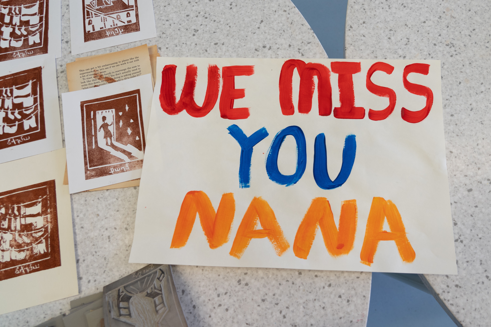

Like There's No Tomorrow
Կարծես թե վաղը չկար
What does war look like after the last bombs have fallen?
On September 20, 2023, Nagorno-Karabakh came entirely under the control of Azerbaijan.
Armenia and neighboring Azerbaijan had been fighting over the mountainous region of
Nagorno-Karabakh in the South Caucasus since the collapse of the Soviet Union in 1991,
with the region’s ethnic Armenian majority establishing the unrecognized breakaway Republic of Artsakh,
while the Azerbaijani government attempted to claim the region as their own as it fell within their borders.
Sporadic violence escalated into war between the countries
throughout the 1980s and 1990s.
Life Before in Nagorno-Karabakh
In 2021, life slowly came back to Nagorno-Karabakh. But the traces of the 2020 war were everywhere,
and the atmosphere, heavy.
While children laughed and played around, teams of
deminers were working everyday to find and destroy mines, cluster munitions,
bullets and everything that made the soil dangerous.
Traditional “banaki qef” parties were
organized to send off young men to their military service. Dances and laughs to mask the deep worry for a
loved one during uncertain times and fragile peace. Sporadic violence
escalated into war between the countries throughout the 1980s and 1990s.
Children playing around in the sports hall of their school in the Kolkhozashen village in
Nagorno-Karabakh. June 25, 2022.
A view of a residential street of Stepanakert and its hospital. April 23, 2021.
Children playing around during a walk in nature in the Kolkhozashen village in
Nagorno-Karabakh. June 25, 2022.
In Nagorno-Karabakh, there was only one pub, called “Bardak” (“mess” in Russian). It was created by
32-year-old Azat, a native of Stepanakert, who saw four wars in his life despite his young age. In the 90s,
he was a child, hiding in shelters with his mother and sister, while his
father was fighting. In 2016 he fought, and after the April War, decided to open the pub. In 2020, he
fought, was severely injured, but decided to reopen the pub a few months later. That’s when this was
filmed.
Azat remembers the 27 of September 2020, when the war started.
We see people trying to have fun and live despite everything in the aftermath of the war. But at the same
time being so worried they even teach children how to use weapons, fearing if they die, the kids might have
to protect themselves.
In front of the pub stands a rocket, when playing around, people make a contest of who can wear a gas mask
the fastest. In a region that many feel has no future, the venue doesn't just provide Azat with a
livelihood. Azat lost friends and almost a leg in the last war. Reopening
Bardak was a signal of his commitment to his homeland. He was always seeking to live life to the full while
rebuilding, shadowed by the need to prepare for the worst.
The worst happened in September 2023.
A short war, followed by the ethnic cleansing of the region. No
Armenians left in Nagorno-Karabakh for the first time in centuries. Azat fled with his family and they are
now refugees in Armenia.
In December 2023, Azat reopened “Bardak” in Yerevan.
An employee of the Halo Trust NGO walking through debris near a depot that was bombed
during the 2020 war. November 2, 2021
A view of a residential street of Stepanakert and its hospital. April 23, 2021.
Checkpoints in and out of NK Region
After the 2020 war, and the ceasefire agreement between Armenia and Azerbaijan brokered by Moscow,
2,000 Russian ‘peacekeepers’ were deployed in Nagorno-Karabakh. While during and right after the war
international journalists had been able to document what happened, after February
2021, access to Nagorno-Karabakh was forbidden for them.
To access the region coming
from Armenia, the only possible way became the Lachin corridor. After crossing an Armenian checkpoint on the
border, there were less about a dozen Russian checkpoints to cross, where Russian ‘peacekeepers’ checked
cars and paperwork. It was
forbidden to film or document all that journey, and strictly forbidden for foreign journalists. Armenians
could still cross. Nevertheless, during her trips to the region in 2021 and 2022, Astrig Agopian, shot a few
details when she could.
The Blockade
While in Nagorno-Karabakh people keep on living a normal life and try to reconstruct after the war,
Armenians in Armenia who were also affected by the war were processing what they went through, like the
young boys in their twenties who were competing their mandatory military
service when the war started.
ABOVE: Kolya at the Abastan factory, a self organized community of artists in Tumanyan,
Armenia, where he can focus on his writing.
Kolya lost his legs in Nagorno-Karabakh during the 2020 war, while he was doing his military service, and was
part of a group of of six boys who were surrounded for seventy days by Azerbaijani troops.
Even after the end of the war, people had no idea what had happened to them. When they were
brought back home, their story was shared and most people in Armenia now know about their seventy days in a
blockade, wandering around the abandoned villages, miraculously
surviving.
“War is ugly. And beautiful. It purifies. Cuts the bullshit. Unlike peace —
war never asks you if you are ready for a lesson.”
Kolya walking in an underground passage in Yerevan. Some of his texts in his own
handwriting in Russian (his mother tongue).
Kolya in his apartment in Yerevan. Some of his texts in his own handwriting in
Russian (his mother tongue).
Arthur in the rehearsal room for dancers in the underground of the Armenian
National Opera and Ballet Theater in Yerevan.
Arthur sitting on a bench near his former dance school in Yerevan.
Arthur is 26 years old. He was a professional dancer in Yerevan until the 2020 war, and also studied to
work in the IT sector. During the war he was enlisted, and he lost one his legs while fighting in
Nagorno-Karabakh. “It is a good thing that I was already transitioning to IT,
because I knew I could work and make a decent salary despite everything,” he says.
The young man misses dancing, and he is okay with talking about
he lived through, doesn’t express any regret but wants to move on. “The situation and my new reality does
not affect my goals. It is important to keep focused on your aim, it is
the only way to heal. I got married, I have plans to move to Spain for work, but I would like to come back
to Armenia after, have a family. I have a prosthetic leg now, but I am the same person and I want the same
life.”
Sarkis, his wife Astghik and their two kids in the trailer they live in.
Sarkis is 31 years old. He is from Nagorno-Karabakh and during the 2020 war, a kamikaze drone killed soldiers
who were evacuating the wounded, under his eyes, and left him with injuries and burns. “Most days I still feel a
lot of pain. Inside, my organs, are burnt too.”
He is currently living in a small trailer on a landfill behind Yerevan, in terrible conditions, with
his wife and two small children. His mother, who cannot move since she had a heart attack, out of fear, is
laying on an improvised bed in one corner. He had to come to the
Armenian capital to get treatment. “I am ashamed to be away from Karabakh, especially now during the blockade,”
he said.
Sarkis felt like a second-class citizen in the capital and dreamed to go back
to Karabakh as soon as the blockade would be over. But he lost his
homeland in the meantime.
“Most days I still feel a lot of pain.
Inside, my organs, are burnt
too.”
Sarkis shows the burns on his body following his injury during the 2020 war.
Astghik and their daughter.
The link between Nagorno-Karabakh and Armenia was challenged after the 2020 war with the presence of Russian
soldiers and constant tension with Baku. But through the Lachin Corridor, people could go back and forth and
necessary goods were delivered.
Until in
December 2022, Azerbaijan blocked the Lachin corridor, only road connecting the region to Armenia and the
outside world, with no reaction from the Russian ‘peacekeeping’ presence. During 10 months, an increasingly
intense humanitarian crisis unfolded for the blockaded population, who did
not have necessary goods, food, medication, gas, electricity and water.
Armenia
Portrait of Norayr, in the back his mother Nariné and her youngest son
Aren, in their house in Tegh.
Portrait of sisters Naré, Anna and Anoush in their house in Tegh.
Nagorno-Karabakh
Nariné shows a picture of her son Narek doing his military service in Stepanakert,
Nagorno-Karabakh.
“I think I might never see anything good in my life.”
Two months after the ‘banaki qef’, farewell party organized before 18 years old Narek’s military mandatory
service in Nagorno-Karabakh, his family had to leave the village of Aghavno which was handed over to
Azerbaijan, and moved to Tegh in Armenia. The village is on the border, and
often comes under fire, but it is near the Lachin corridor, and Nariné his mother wanted to remain close to
Nagorno-Karabakh and her son. The blockade made the separation even more painful.
Narek’s sisters Naré, Anna and Anoush feel a little isolated and there and struggle
to make new friends. The oldest Naré, dreams of becoming a hairdresser. “Maybe one day I could have my own
salon,” she says, blushing. She wants to move to Goris, the closest
city. While being worried about their older brother, the family also has to prepare for the younger one
Norayr to start his in a few months.
“Most men around people like us are away, in the army, or
dead,” Naré says. “I think I might never see anything good in my life. I
feel misunderstood. There are some good people, but they don’t get it. Even other Armenians.”
“During winter, we burn wood to warm up, we use a wood
stove, I kept it, because we use it like a heater, as the heater does not work without electricity.”
Photo of Lilia’s reflection on her window in her apartment in Yerevan during the
blockade of Nagorno-Karabakh, as she says it feels like her relatives are “so close, yet so far.”
Lilia is a singer from Stepanakert and a member of the group Voices of Artsakh. “We used to tour all over
the world and bring our music and flag everywhere, it was so nice. I never imagined that war would be back
and that it would end like this,” she says. The young artist is 29 years
old and was born a year after the end of First Nagorno-Karabakh war.
She came to Yerevan with her
mother during the 2020 war, while the rest of her family stayed in Karabakh, and ended up staying there. “I
was literally speechless. I lost my voice, I could not sing for
months. My mom and I, we did not even speak. We just read the news, looked at each other. Texted our
relatives, made sure they were alive, did humanitarian aid work. That’s it,” recalls Lilia.
After half a year following the end of the war, Lilia went back to work. She began singing again, worked
hard. When the blockade started, she continued. “Even when I try to smile, my eyes betray me, you can see
from my look that I am deeply sad,” she says. “The hardest part is the
guilt you feel being here able to eat whatever you want, when your own family members barely find enough to
survive,” she adds. Lilia called and texted her relatives everyday, when connections worked during the
blockade.

Above: A portrait of Nana in her high school in Dilijan, Armenia.
Center: A poster made for
Nana by her classmates while she was stuck in Nagorno-Karabakh because of the blockade.
Below:
A portrait of Nana in her corner at the art studio of the high school.
6D: Nana sends a picture of her at her high school graduation to her family. Messages in English.
Message of her father written with Cyrillic alphabet in Karabakh Armenian dialect: “my darling baby
girl, it’s cold, be careful not to catch a cold”
6E: Nana’s mother writes in the Armenian
alphabet in Karabakh Armenian dialect: “Hello, did you take the exam?” And
sends her a picture of the food coupons they got as there are food shortages during the blockade and
everything is rationed.
6F: Message of her father written with Cyrillic alphabet in a mix of
Karabakh Armenian dialect and Russian: “My darling baby girl, today you have the
honor of representing your school, an institution that gives you a ticket for a new life. I know you have a
strong personality and disappointments should not take you down. It does not matter that we are not
physically with you. You know that you are always in our hearts filled of
love. Show us all the strength of your soul. We are proud of you my joy. May God be with us.”
6G: Photo of Nana studying without electricity during the blockade.
6H: Nana’s
mother sends her a text in Armenian:


A view of the city of Goris, last Armenian city before the Lachin corridor that leads to Nagorno-Karabakh,
and the before the border with Azerbaijan.
Areknaz and her daughter are staying at the Lara
Hotel in Goris. They are from Shushi, a city lost by Armenians during the
2020 war and relocated to Stepanakert afterwards. They left Nagorno-Karabakh to attend a wedding in Armenia
and could not head back home.
Arpiné left Nagorno-Karabakh for the first time in her life ever, to attend her niece’s
wedding in Armenia. She arrived to Yerevan on December 11. The next
day, the blockade started. Her children, friends, and students, as she is a professor of Armenian, are on
the other side.
[ Social Media Mood Board Section]
Attack / Expulsion
On September 19, Azerbaijan launches an offensive on Nagorno-Karabakh. The local population,
exhausted after 10 months of blockade, unable to save the wounded and to bury the dead, fearing massacres,
takes the road of exodus.
Thousands of people flee, until after a few
days, more than 100,000 people, the whole population of the region, has left. Armenians relieve the trauma
of the 1915 genocide, while one term starts to appear in news headlines, the events are qualified as
“ethnic cleansing”.

Kornidzor, Armenia
One by one, in a steady non-stop stream, cars, trucks, minivans crawl past the checkpoints into Armenia.
They fled their homeland: Nagorno-Karabakh. In just a few days, it will be empty of Armenians for the first
time in centuries. Volunteers have brought water and food and give it to
people who have been on the road for dozens of hours, and under blockade for over 10 months.
Images by Astrig Agopian

Stepanakert, Nagorno-Karabakh
The military offensive of Azerbaijan on Nagorno-Karabakh is short, but intensive. No international
journalists have access to the region, but thanks to the local journalists who share some footage on social
media, we see why people took the road of exodus.
Images by Marut Vanyan, Siranush Sargsyan on their social media and sent by locals.
Samantha Power
Dozens of journalists arrived to cover the exodus of the Armenians. The top U.S. humanitarian aid official
Samantha Power came to the border and said she was aware of “very troubling reports of violence against
civilians” in Nagorno-Karabakh, criticized the fact that Azerbaijan had
blocked access to the enclave for international observers and announced the U.S. would provide $11.4M in
humanitarian aid.
After Samantha Power left, so did many journalists. And after several days of exodus, the influx of people
coming out stopped. Nagorno-Karabakh was effectively empty of its Armenian population. But in Armenia,
100,000 people had just become refugees. The media attention decreased, and
with a new conflict in Israel/Palestine, disappeared.
An empty road near the road sign that says “Artsakh”, the Armenian name for the
region of Nagorno-Karabakh near the border and the entrance of the Lachin Corridor
What People Took
After the 2020 war, some Armenians from Nagorno-Karabakh had already lost their homes. The
inhabitants of Hadrut left in a hurry when bombardments started, not knowing when they would return. They
did not know they would actually not be able to go back to their homes. Most people
did not have time to pack anything. The only thing they took: the key to their homes.
While after the 2020 war, the majority of Armenians from Nagorno-Karabakh were able to go back to their
homes, or moved to another part of the region if they lost their village or city, after the war of September
2023, it’s the full population of Nagorno-Karabakh that fled. More than
100,000 people lost their homes.
Depending on where they are from, how heavy the fighting was, if they were evacuated or had to flee
barefoot, they all tried to bring something from a region that was their homeland, and where they do not
know if they will ever be able to go back.
Alyona Hayrapetyan
26 years old, from Kers village in Martuni region of Nagorno-Karabakh.
“I have accumulated these bookmarks over the years. They are
different objects that I used as bookmarks. And I did not initially mean to collect them, but it became a
collection. It just happened.”
Gayane Sargsyan
29 years old.
From Stepanakert.